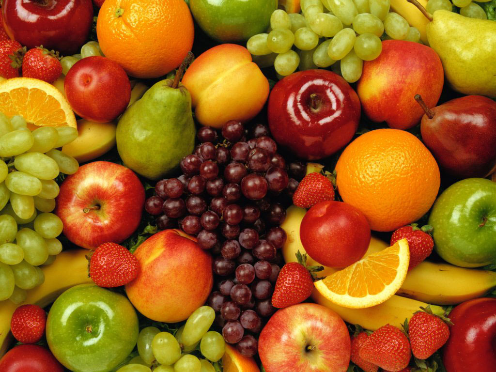

<!doctype html>
<head>
	<link rel="stylesheet" href="css/bootstrap.min.css">
	<link rel="stylesheet" href="css/font-awesome.min.css">	
	<link rel="stylesheet" href="css/leaflet.css">
	<link rel="stylesheet" href="css/main.css">
  <link rel="stylesheet" href="css/leaflet.awesome-markers.css">
  <meta charset="utf-8">
</head>

<body ng-app="picApp">
			<!-- Content -->
			<div ui-view="" style="height: 100%;">
	</div>


	<!-- Libraries -->
	<script src="libs/jquery.min.js"></script>
	<script src="libs/angular.min.js"></script>
	<script src="libs/angular-ui-router.min.js"></script>
	<script src="libs/bootstrap.min.js"></script>
  <script src="libs/ui-bootstrap-tpls.js"></script>
	<script src="libs/leaflet.js"></script>
  <script src="libs/leaflet.awesome-markers.min.js"></script>

	<!-- Scripts -->
	<script src="scripts/app.js"></script>
	<script src="scripts/controllers/home.js"></script>
	<script src="scripts/controllers/mapa.js"></script>
	<script src="scripts/controllers/ocio.js"></script>
	<script src="scripts/controllers/servicios.js"></script>
	<script src="scripts/controllers/ofertas.js"></script>
	<script src="scripts/controllers/transporte.js"></script>
	<script src="scripts/controllers/turismo.js"></script>
	<script src="scripts/controllers/tiempo.js"></script>
	<script src="scripts/controllers/emergencias.js"></script>
	<script src="scripts/controllers/entradas.js"></script>


	<!-- HTML in scripts -->

  <!-- Navbar -->
  <script type="text/ng-template" id="web.html">
      <div ng-include src="'navbar.html'"></div>
      <div id="content" ui-view></div>
  </script>
  <!-- Pagina principal -->
	<script type="text/ng-template" id="home.html">
		<div class="mainpage">
    <div class="media">
      <p class="pull-left">
			  
      </p>
      <div class="media-body">
        <h3 class="media-heading">El derribo del viaducto de Sabino Arana costó 235.000 euros más de lo previsto</h3>
		    <p>La Diputación foral de Bizkaia invirtió finalmente 3.020.000 euros en derribar los viaductos de Sabino Arana, ya que a los 2.785.000 euros contemplados en el precio de adjudicación de la demolición, el departamento de Obras Públicas y Transportes ha tenido que añadir otros 235.000 euros por distintas obras que "no estaban expresamente previstas en el proyecto inicial", según ha informado este jueves la diputada del área, Itziar Garamendi, en las Juntas Generales, en una comparecencia solicitada por el grupo EH Bildu.
        Garamendi, que ha destacado que, aún así, el coste final "queda lejos aún del precio de licitación de la obra, que fue de 4 millones de euros", ha señalado que en unos trabajos de "esta envergadura, y una vez en faena", la Diputación detectó que era necesario acometer una serie de actuaciones para su "correcta finalización". </p>
        <a> leer mas </a>  
      </div>
    </div>
    <hr/>
		<div class="media">
			<p class="pull-left">
        
      </p>
      <div class="media-body">
        <h3 class="media-heading subtitle">La previsión da un giro y confirma ahora buen tiempo hasta el sábado</h3>
		    <p>Poco a poco, el panorama meteorológico se va clarificando respecto al tiempo del que disfrutaremos (o padeceremos) esta Semana Santa. Tras varios días de dudas, en los que los modelos que se utilizan para realizar las predicciones apuntaban al predominio del ambiente frío y lluvioso, las expectativas han dado un vuelco y ahora pintan bastante mejor: hasta el sábado, al menos, el tiempo estable y anticiclónico, con temperaturas prácticamente veraniegas, reinará en prácticamente toda la península. Pero a partir del fin de semana el pronóstico vuelve a quedar envuelto en la incertidumbre, aunque la balanza se inclina hacia un más que probable empeoramiento.
        Quien más quien menos está pendiente estos días del tiempo que va a hacer al final de la semana. La enorme dificultad que este año entraña hacer un pronóstico fiable, con cambios radicales de escenarios de un día para otro, ha avivado las especulaciones sobre si hará bueno o malo.</p>
        <a> leer mas </a>  
      </div>
    </div>
    <hr/>
		<div class="media">
			<p class="pull-left">
        
      </p>
      <div class="media-body">
        <h3 class="media-heading subtitle">Muévete en bicicleta estas vacaciones</h3>
        <p>Barcelona está siguiendo los pasos de las principales ciudades europeas en materia de cicloturismo. La Ciudad Condal cuenta con un gran número de kilómetros de carril bici a través de los cuales se puede llegar, de forma cómoda y rápida, a los principales puntos de interés turístico. Esto hace que cada vez sean más utilizados como alternativa al transporte público o a los autobuses turísticos. Hace ya algunos años, el Ayuntamiento puso en funcionamiento el programa urbano de bicicletas, Bicing, el cual permite, tanto a residentes como a visitantes, alquilar y aparcar sus bicicletas en diversos puntos estratégicos de la localidad a unos precios muy económicos.
        El centro histórico se puede recorrer fácilmente. Una buena idea es comenzar desde la Plaza Catalunya y atravesar el Barrio Gótico para después pasar por la Catedral, la Sagrada Familia y la Rambla. Todo ello sin necesidad de salir de los carriles bici. </p>
        <a> leer mas </a>
		  </div>
    </div>
    <hr/>
		<div class="media">
			<p class="pull-left">
        
      </p>
      <div class="media-body">
        <h3 class="media-heading subtitle">La moneda local Ekhi cambia 3.242 euros en su primer mes en Bilbao</h3>
		    <p>La moneda local Ekhi ha cambiado 3.242 euros, conseguido 197 socios y 29 tiendas adheridas a la asociación, después de su primer mes en funcionamiento y con la mirada puesta en salir próximamente del Casco Viejo de Bilbao con esta iniciativa solidaria.
        Uno de los promotores de la moneda local, Pello López de Munain, ha considerado estas cifras "muy positivas" en una rueda de prensa en el Centro Municipal Barrainkua. Según ha explicado, el objetivo es "salir del Casco Viejo" y empezar a instalarse en otros municipios, como Barakaldo, donde van a abrir una oficina de cambio, para "incorporar más masa crítica" a este proyecto solidario.</p>
        <a> leer mas </a>
      </div>
    </div>
    </div>
	</script>

	<!-- Pagina de mapa -->
	<script type="text/ng-template" id="mapa.html">
		<div class="col-md-3">
			<div class="list-group">
				<a ng-repeat="item in elements"
				 	class="list-group-item text-center"
				 	ng-class="{active: item.active}"
				 	ng-click="toogle($index)"> {{item.name}} </a>
			</div>
		</div>
		<div class="col-md-9" id="map"></div>
	</script>

	<!-- Pagina de ocio -->
	<script type="text/ng-template" id="screensaver.html">
    <carousel id="carousel" interval="3000" class="fading">
      <slide ng-repeat="slide in slides" ng-click="exit()" active="slide.active">
                  
        <div class="carousel-caption">
          <h4>{{slide.title}}</h4>
          <p style="color:white">{{slide.text}}</a>
          </p>
        </div>
      </slide>
    </carousel>
	</script>

 <!-- Pagina de servicios -->
  <script type="text/ng-template" id="ocio.html">
    <div class="row">
      <div class="col-md-3">
        <ul class="list-group">
          <li class="list-group-item nopad"> 
            <accordion-group is-open="status.open" class="list-group">
              <accordion-heading>
                Cultura <i class="pull-right glyphicon" ng-class="{'glyphicon-chevron-down': status.open, 'glyphicon-chevron-right': !status.open}"></i>
              </accordion-heading>
                <p class="list-group-item"> Museos y Arte </p>
                <p class="list-group-item"> Musica y Danza </p>
                <p class="list-group-item"> Teatro y Opera </p>
                <p class="list-group-item"> Exposiciones y Ferias </p>
                <p class="list-group-item"> Cine </p>
                <p class="list-group-item"> Otras actividades </p>
            </accordion-group>
          </li>
          <li class="list-group-item"> Deportes </li>
          <li class="list-group-item"> Infantil </li>
          <li class="list-group-item"> Vida nocturna </li>
        </ul>
      </div>

      <div class="col-md-9 ocio">
        <div class="media">
          <p class="pull-left">
            
          </p>
          <div class="media-body">
            <h3 class="media-heading">Cine - 8 Apellidos Vasocs</h3>
            <p>Sabado 17 de Mayo - Martes 20 de Mayo</p>
            <p>Cines Multicines - Bilbao</p>
            <a>Mas informacion</a>
          </div>
        </div>
        <hr />
        <div class="media">
          <p class="pull-right">
            
          </p>
          <div class="media-body">
            <h3 class="media-heading">Musica - EGO Temporada verano 2014</h3>
            <p>Miercoles 23 de Julio de 2014</p>
            <p>20:00</p>
            <p>Euskalduna - Auditorium - Bilbao</p>
            <a>Mas informacion</a>         
          </div>
        </div>
        <hr />
        <div class="media">
          <p class="pull-left">
            
          </p>
          <div class="media-body">
            <h3 class="media-heading">Teatro Infantil - Aladdin</h3>
            <p>Sabado 17 de Mayo de 2014</p>
            <p>17:00</p>
            <p>Amaia Arrasate - Arrasate/Mondragón</p>
            <a>Mas informacion</a>          
          </div>
        </div> 
        <hr/>
        <div class="media">
          <p class="pull-right">
            
          </p>
          <div class="media-body">
            <h3 class="media-heading">Exposicion - Yoko Ono: half-a-wind-show. Retrospectiva</h3>
            <p>Miercoles 14 de Marzo - Jueves 4 de Septiembre 2014</p>
            <p>Museo Guggenheim - Bilbao</p>
            <a>Mas informacion</a>          
          </div>
        </div> <hr/>
        <div class="media">
          <p class="pull-left">
            
          </p>
          <div class="media-body">
            <h3 class="media-heading">Fun & Serious Game Festival</h3>
            <p>Martes 28 de Noviembre - Lunes 03 de Diciembre 2014</p>
            <p>Museo Guggenheim, AlhóndigaBilbao, Palacio Euskalduna y Teatro Campos Elíseos</p>
            <a>Mas informacion</a>          
          </div>
        </div> <hr/>
        <div class="media">
          <p class="pull-right">
            
          </p>
          <div class="media-body">
            <h3 class="media-heading">Bilbao Triathlon</h3>
            <p>Sabado 24 de Mayo de 2014</p>
            <p>Bilbao</p>
            <a>Mas informacion</a>          
          </div>
        </div> 
      </div>
    </div>

  </script>

  <!-- Pagina de servicios -->
	<script type="text/ng-template" id="servicios.html">

	</script>

	<!-- Pagina de ofertas -->
	<script type="text/ng-template" id="ofertas.html">
    <ul class="nav nav-pills">
      <li><a>Hoy gratis!</a></li>
      <li class="active"><a>Tablon de Anuncios</a></li>
      <li><a>Promociones</a></li>
    </ul>
    <div class="row">
      <div class="col-md-4 promo">
        
        <div class="info">
          <h3 class="text-center"> Panaderia Ocio </h3>
          <p class="text-center"> Media barra al 50% los jueves! </p>
          <p class="text-center"> Calle Blas de Otero 16, Bilbao </p>
        </div>
      </div>
      <div class="col-md-4 promo">
        
        <div class="info">
          <h3 class="text-center"> Fruteria Rosa </h3>
          <p class="text-center"> Los productos mas frescos al mejor precio. </p>
          <p class="text-center"> Calle Blas de Otero 30, Bilbao </p>
        </div>
      </div>
      <div class="col-md-4 promo">
        
        <div class="info">
          <h3 class="text-center"> Vente de Pintxos </h3>
          <p class="text-center"> Pasa por el Oriotarra, la Papa y el Txindoki </p>
          <p class="text-center"> Las mejores tapas de Deusto </p>
        </div>
      </div>
    </div>
    <div class="row">
      <div class="col-md-4 promo">
        
        <div class="info">
          <h3 class="text-center"> Josu Lizana Peña, Dentista </h3>
          <p class="text-center"><small> "Excepcional.
            Trato inmejorable, muy delicados, amables y profesionales.
            De Josu Linaza ademas de gran profesional, destacar su gran humanidad." </small>
            <br>Avda. Madariaga, 1, 48014, Bilbao</p>
        </div>
      </div>
      <div class="col-md-4 promo">
        
        <div class="info">
          <h3 class="text-center"> Beer House </h3>
          <p class="text-center"> La mejor cervecera de Deusto </p>
          <p class="text-center"> Av. Madariaga 2 </p>
        </div>
      </div>
      <div class="col-md-4 promo">
        
        <div class="info">
          <h3 class="text-center"> Carniceria San Ignacio </h3>
          <p class="text-center">  </p>
          <p class="text-center"> Av. Lehendakari Aguirre 171 </p>
        </div>
      </div>
    </div>
	</script>

	<!-- Pagina de transporte -->
	<script type="text/ng-template" id="transporte.html">

	</script>

	<!-- Pagina de turismo -->
	<script type="text/ng-template" id="turismo.html">
    <ul class="nav nav-pills">
      <li class="active"><a>Lugares de interes</a></li>
      <li><a>Rutas recomendadas</a></li>
      <li><a>Gastronomia Vasca</a></li>
      <li><a >Compras</a></li>
    </ul>
    <div class="media">
      <p class="pull-left">
        
      </p>
      <div class="media-body">
        <h3 class="media-heading">Museo Guggenheim</h3>
        <p>Visita el museo de arte contemporaneo mas conocido de Bilbao.</p>
        <a>Mas informacion</a>
      </div>
    </div>
    <hr />
    <div class="media">
      <p class="pull-right">
        
      </p>
      <div class="media-body">
        <h3 class="media-heading">Parque Doña Casilda</h3>
        <p>.</p>
        <a>Mas informacion</a>         
      </div>
    </div>
	</script>

	<!-- Pagina de tiempo -->
	<script type="text/ng-template" id="tiempo.html">

	</script>

	<!-- Pagina de emergencias -->
	<script type="text/ng-template" id="emergencias.html">

	</script>

	<!-- Pagina de entradas -->
	<script type="text/ng-template" id="entradas.html">

	</script>

	<script type="text/ng-template" id="navbar.html">
		<div class="header">
			<div id="navbar" class="navbar navbar-inverse" role="navigation">
       	<div class="navbar-header">
         	<button type="button" class="navbar-toggle" data-toggle="collapse" data-target=".navbar-collapse">
           	<span class="sr-only">Toggle navigation</span>
           	<span class="icon-bar"></span>
           	<span class="icon-bar"></span>
           	<span class="icon-bar"></span>
         	</button>
       	</div>
       	<div class="navbar-collapse collapse">
         	<ul class="nav navbar-nav">
           	<li><a ui-sref="web.home" class="icon fa fa-home fa-2x"></a></li>
           	<li><a ui-sref="web.mapa">Mapa</a></li>
           	<li><a ui-sref="web.ocio">Ocio</a></li>
           	<li><a ui-sref="web.servicios">Servicios</a></li>
           	<li><a ui-sref="web.ofertas">Ofertas</a></li>
          		<li><a ui-sref="web.transporte">Transporte</a></li>
           	<li><a ui-sref="web.turismo">Turismo</a></li>             
           	<li><a ui-sref="web.tiempo">Tiempo</a></li>
           	<li><a ui-sref="web.emergencias">Emergencias</a></li>
           	<li><a ui-sref="web.entradas">Entradas</a></li>
         	</ul>
          <p class="pull-right"><a>Castellano</a> | <a> Euskara </a> | <a> English </a></p>
         	<div class="col-sm-2 col-md-2 pull-right">
         		<form class="navbar-form" role="search">
       				<div class="input-group">
         				<input type="text" class="form-control" placeholder="Buscar">
         	    	<span class="input-group-btn">
         	      	<button type="submit" class="btn"><i class="glyphicon glyphicon-search"></i></button>
								</span>
       				</div>
     				</form>
       		</div>
   			</div>
   		</div>
		</div>
	</script>

</body>